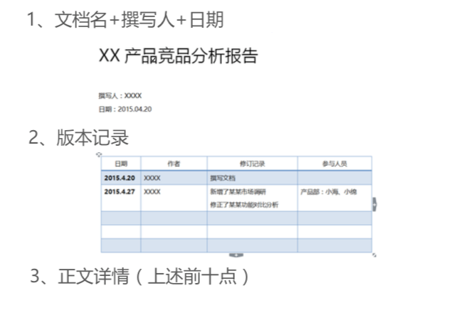

竞品分析 认知对手及行业

1、竞品分析定义及工具
竞品分析定义
一款产品(包括虚拟产品、服务等)在概念阶段、研发制 作阶段、营销阶段、维护升级阶段，对同类竞争对手的产 品，所作出的具有针对性的客观、主观分析。
战略上:分析竞争对手的产品整体定位、产品策略，寻求新的切入点。
战术上:了解竞争对手的每一步动作，为自己制定合理的发展规划;
进行产品可视化方面的学习，比如产品架构、交互设计、视觉表现等，快 速搭建产品雏形。
一般竞品分析以WORD文档为主，也可以是PPT。
竞品分析对象
直接竞品:产品定位、甚至商业模式一致，是市场上直接的竞争对手。 比如招聘行业，智联招聘的直接竞争对手是前程无忧、中华英才网等。
间接竞品:相关细分市场的其余产品，比如智联招聘的间接竞品是58 赶集、BOSS直聘、拉勾、猎聘网。

重点:竞品分析需要强有力的数据支撑
1 百度指数/360指数
2 aso100(IOS)
3 酷传(Android)
4 爱站网
5 新榜(微信公众号)
6 梅花网(广告投放) 7 天眼查、企查查
8 脉脉
9 it桔子(创投)
10 拉勾
11 Questmoblie(行业报告)
12、阿里指数
13、易观千帆(移动应用的数据)
14、乐视指数
15、艾瑞咨询
16、微博指数/微报告
17、中文互联网数据资讯中心
18、http://hao.199it.com/
19、友盟(报告)
2、竞品分析十大维度

竞品分析的维度
一、市场现状(行业分析 )
三、产品定位(企业愿景分析 )
五、竞品数据分析
七、运营及推广策略
九、SWOT分析
二、竞品背景分析
四、目标用户分析
六、产品分析
八、盈利方式
十、得出结论

一、市场现状/行业分析
1、从行业的全局进行分析，市场的容量、市场的发展前景;
2、目前市场上的行情是怎样的?有多少竞品在跑马圈地?哪些 是直接竞品，哪些是间接竞品?他们的发展情况如何;
3、一般可以去找一些行业分析报告，易观智库、艾瑞咨询、 questmoblie、比达咨询、中文互联网数据资讯中心。

二、竞品分析背景
1、公司信息、公司规模、专利申请、技术优势、融资的情况、 成立时间、公司口碑;
2、创始人及核心创始团队的背景，甚至是前世今生;
3、获取信息的渠道:IT桔子、天眼查、企查查、36氪、猎云网、 脉脉、微博等。
三、产品定位/企业愿景
1、对竞品进行定位的分类，描述各竞品的定位差异，产品主线、 主营业务、主场景、主要用户群体、核心功能等;
2、对企业的最终愿景进行分析，比如是做平台型电商，还是做自 营电商;
3、通过产品定位、企业愿景分析，找到自己产品的切入点和定位。
四、目标用户分析
1、分析各个竞品的目标用户，看看彼此的目标用户需求有那些异 同?比如招聘市场，58赶集的目标用户是蓝领，智联和51的是白领， 猎聘是高端职位;
2、重点描述产品目标用户的存在量级、痛点，及各竞品是如何切 入到市场，通过什么满足用户痛点，和怎样的方式提升用户粘性。
五、竞品数据分析
1、竞品所占的市场份额 可先按整体数据分析。比如旅游产品，携程去哪儿占多少，途牛 旅游;分析完整体数据再按具体业务进行分析，比如机票业务， 酒店业务携程去哪儿占多少，途牛旅游占多少。
2、运营数据 分析竞品的注册用户数、活跃用户量、用户增长率、用户付费率、 留存率、日新增用户、转化率 、ARPU等。
用到的工具:ASO100、蝉大师、酷传、百度指数、360指数。
六、产品分析
1、功能分析 这也是产品经理做的最多的分析，可以把竞品的主要功能用表格列出 来，然后根据平台的产品定位、目标用户、运营模式去分析竞品增加 某个功能的目的是什么，是增加收入还是为了增加用户粘性。
2、交互设计分析 分析谁的交互设计更加符合用户的使用习惯，谁的使用流程更加 流畅。比如同样是预约美甲师上门美甲，河狸家和58到家谁的 预约流程更加简洁。
3、视觉表现方面 将竞品的主要视觉风格，色彩体系，布局结构，等进行分析。风 格包含是卡通，扁平化，还是简约等;布局结构是横排还是竖排。

七、运营及推广策略
分析竞争对手的运营方式、推广手段、营销策略、获客渠道、合作 渠道等。
获取信息的渠道:梅花网、百度指数+相关新闻、对方客服电话、 竞品公司招聘信息。
八、盈利模式
各个竞品的盈利是什么?是广告盈利?会员收费?竞价排名收费?
增值服务收费?
九、SWOT分析
可以采用SWOT分析产品的优势、劣势、机会、威胁，进而得出 我们切入某个行业的机会和优势。
十、得出结论
竞品分析一定是开始做之前就带着目的进行分析，最后得出相应的 结论。我们分析别人的产品是为了了解对手，知己知彼百战不殆， 同时我们要学习竞对的长处来让自己快速成长。
做竞品分析需要注意的几点:
1、竞品分析一定带着目的去进行，通过一系列分析得出相应的结论。切不可流于 表面，面面俱到堆砌图片和文字，更不可写成用户体验报告;
2、竞品分析是一个持续更近，不断更新的过程，要时时跟进竞品的变化。比如一 个竞品已经更新至3.0，你做的竞品分析却还停留在2.0版本;
3、竞品分析得出的结论需要有数据和理论的支撑。
竞品分析是产品经理经常性的工作，但非必要 工作。上述十大维度为全面的竞品分析，通常 写竞品分析会依据所在公司情况而定。

竞品分析文档一般结构
